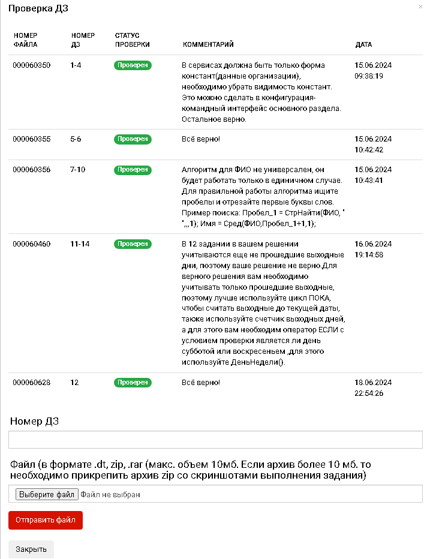

Проверка домашних заданий
Убедитесь в правильности своих знаний и получите ценные рекомендации от наших преподавателей с нашей услугой проверки домашних заданий!
Что получите?
- Проверку домашних заданий опытным преподавателем с конструктивной обратной связью;
- Инструмент загрузки заданий в личном кабинете;
- Статус проверки в течение 3 рабочих дней: "Всё верно!" или комментарии с ошибками.
Почему нужно?
- Повышение эффективности обучения через закрепление практикой;
- Персональные рекомендации от преподавателей;
- Мотивация и уверенность через осознание ошибок и достижений.
Как работает?
- Оформите покупку услуги проверки домашних заданий;
- Загрузите выполненные задания в личном кабинете;
- Ожидайте проверку и изучайте комментарии. Срок — до 3 рабочих дней.
Выполнение домашних заданий не является обязательным, но настоятельно рекомендуется для закрепления знаний и достижения наилучших результатов в обучении.
Преобразуйте свои знания в уверенные навыки с помощью нашей услуги проверки домашних заданий!
